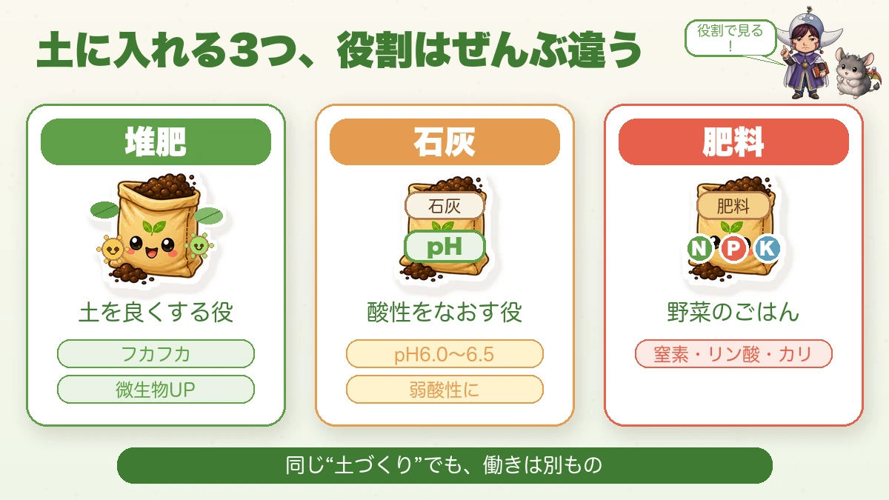
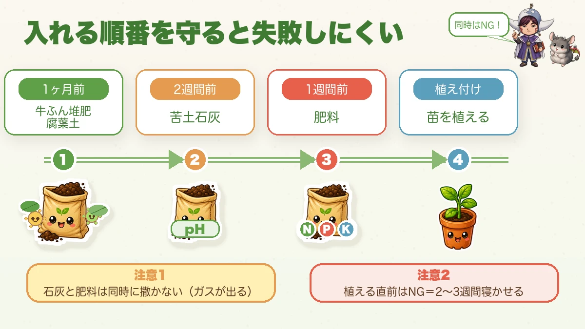
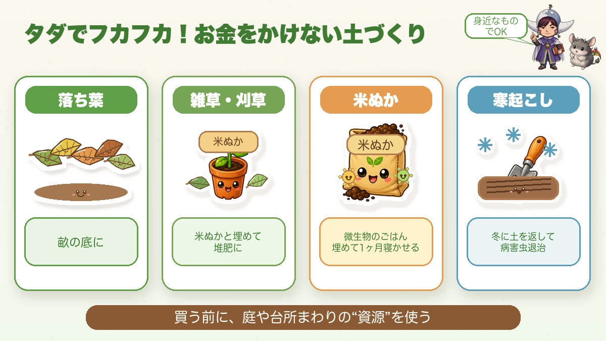

【保存版】いきなり植えたらNG！有機・無農薬の土づくり🌱 野菜は“土”で決まる

🗨️「ちゃんと肥料あげてるのに、育たへん…」
🗨️「すぐ枯れるのは、なんで？」
🗨️「土づくりって、なんかむずかしそう」
どうも、8150（えいこう）です🌱 家庭菜園歴8年、有機・無農薬でやってる、野菜と理科が好きな人間です。
今日は家庭菜園のいちばんの土台、土づくり。正直に言いますね。野菜が元気に育つかどうかは、ほぼ“土”で決まります。 苗の良し悪しより、肥料より、まず土。ここをサボると、あとで「なんで育たへんの…」と悩むことになります（昔の私です😇）。
でも安心してください。理屈さえ分かれば、やることはシンプル。今日はそれを理科の先生として噛みくだきつつ、私が実際に使ってる資材の正直レビューもお話しします。
📖 この記事の目次
土づくりって、じつは「微生物を育てる」こと
ここがいちばん大事な考え方です。私は有機・無農薬。化成肥料を使いません。じゃあ、誰が野菜に栄養を届けてるのか？ 答えは、土の中の微生物です。
有機肥料って、撒いただけでは野菜は吸えないんです。土の中の微生物がいったん分解して、はじめて野菜が吸える形になる。料理でいう「下ごしらえ」をしてくれる職人さんが、微生物なんですね。
だから有機・無農薬の土づくりは、野菜を育てる前に、まず微生物を育てること。微生物がたくさん住む、フカフカの土。これがゴールです☺️
まず整理：堆肥・石灰・肥料の「役割」
「土に何を入れればいいの？」とよく聞かれます。ここ、3つの役割をハッキリ分けると一気にスッキリします。

① 堆肥（たいひ）＝土を良くする役
牛ふん堆肥や落ち葉など。土をフカフカにして、水はけ・水もち・空気の通りを良くし、微生物を増やします。土の“住みごこち”を整える係ですね。
② 石灰（せっかい）＝酸性をなおす役
日本は雨が多くて、土がだんだん酸性に傾きます。酸性すぎると根が傷んで、栄養を吸えなくなる。多くの野菜は pH6.0〜6.5（弱酸性） が好きなので、石灰でちょうどよく戻してあげます。苦土石灰（マグネシウム入り）がおすすめ。
③ 肥料＝野菜のごはん
窒素・リン酸・カリなどの栄養。私は有機肥料（ぼかし・鶏ふん）だけ使います。鶏ふんは安いのに優秀で、根を元気にするカリも多め。ホームセンターで数百円、コスパ最強です。
私が選ぶなら、完熟の牛ふん堆肥＋苦土石灰＋発酵鶏ふんの3点から。無農薬に合わせて“有機・化学肥料不使用”を選ぶのがポイントです。


大事な「入れる順番」
この3つ、入れる順番とタイミングがあります。ここを間違えると、せっかくの土づくりが台無しに。

- 牛ふん堆肥・腐葉土 → 植え付けの1ヶ月前
- 苦土石灰 → 2週間以上前
- 肥料（鶏ふん・ぼかし）→ 1週間前
ポイントが2つ。苦土石灰と肥料を、同時に撒かないこと。一緒にするとアンモニアガスが出て、野菜にも微生物にもよくないんです。だから時期をずらします。（かき殻などの有機石灰はアルカリがやさしいので、肥料と一緒でもOK）
そしてもう1つ、これが鉄則。「植える直前に入れない」。有機の資材は、微生物が分解する時間が必要。撒いてすぐ植えると、根が傷んだり、ガスが出たり、一時的に土の窒素が足りなくなったりします。最低でも2〜3週間は寝かせてから植えましょう。
お金をかけない、無農薬の土づくり実践
ここからは実践編。ぜんぶ、お金をかけずにできます。

◯ まずは堆肥たっぷり：はじめての土・カチカチの土には、牛ふん堆肥を多めに。微生物のすみかになります。「入れすぎて失敗した」はほぼ無いので、最初はしっかり。
◯ 落ち葉を畝の底に：畝を20〜30cm掘って、底に落ち葉を敷いて土をかぶせる。水はけが良くなり、やがて腐葉土に。桜などの広葉樹の落ち葉が◎（イチョウは腐りにくいので避けて）。
◯ 雑草・刈った草も捨てない：抜いた雑草に米ぬかをまぶして土に埋めると、3ヶ月ほどで立派な堆肥に。「ゴミがお宝になる」んですよ🌱
◯ 米ぬかは微生物のごはん：コイン精米所でタダでもらえたりします。ただし虫を呼ぶことがあるので、撒いたら必ず土に混ぜ込んで、1ヶ月以上寝かせてから植えること。（虫が気になる人は無理に使わなくてもOK。このへんは私も慎重派です）
◯ 冬は「寒起こし」で病害虫予防：12〜2月に土を20〜30cmひっくり返して寒さに当てると、塊がくずれてフカフカになり、土の中にひそむ病原菌や害虫、雑草のタネを寒さで退治できます。農薬を使わない私には、これがほんまにありがたい。
石灰は「入れすぎ」も要注意
石灰、足りないとダメですが、入れすぎも障害が出ます。アルカリに傾きすぎると、鉄などの微量栄養が吸えなくなって葉が黄色くなったり。鶏ふんにもカルシウムが入ってるので、「石灰＋鶏ふんドバドバ」は入れすぎになりがち。
心配な人は、pH測定器（ホームセンターで3000〜5000円、挿すだけの簡易式でOK）を1つ持っておくと安心です。とはいえ、神経質になりすぎなくて大丈夫。まずは「弱酸性を狙う」くらいの気持ちで☺️
プランターの人は、ここだけでOK
「うち、プランターやねんけど…」という方、安心してください。市販の「野菜用培養土」を使えば、土づくりはほぼ済んでます（前回の道具編で話したやつですね）。最初はそれで十分。袋に「有機」「化学肥料不使用」の表記があるものを選ぶと、この記事の無農薬・化成肥料なしと一貫します。使い終わった土も、米ぬかや落ち葉で再生できます。
無農薬でいくので、培養土も“有機”タイプを。約25Lでプランター1つ分の目安です。

まとめ
- 土づくり＝微生物を育てること（有機の栄養は微生物が野菜に渡す）
- 堆肥（土を良く）・石灰（酸性をなおす）・肥料（ごはん）の役割を分けて、順番を守る
- 植える直前に入れない。2〜3週間は寝かせる
- 落ち葉・雑草・米ぬか・寒起こしで、お金をかけずフカフカの土に
土さえ整えば、もう野菜は半分育ったようなもんです。あせらず、土から🌱